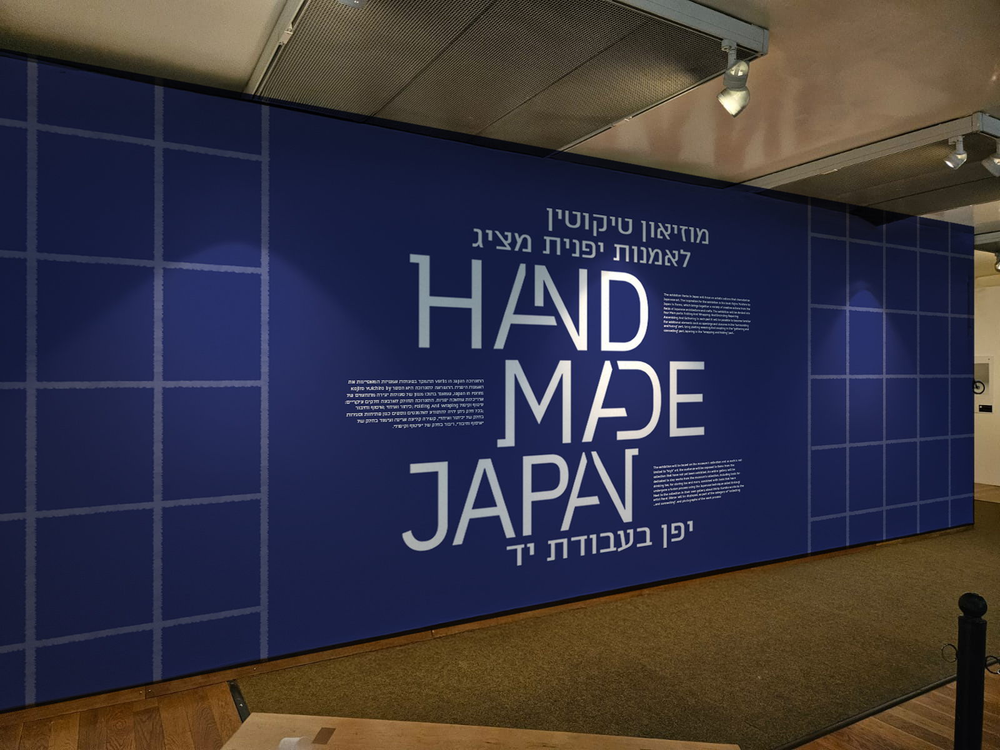
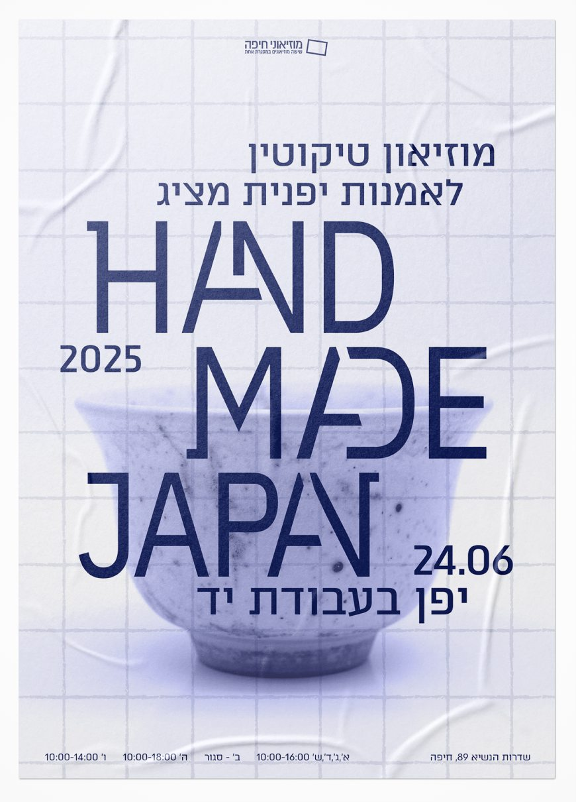
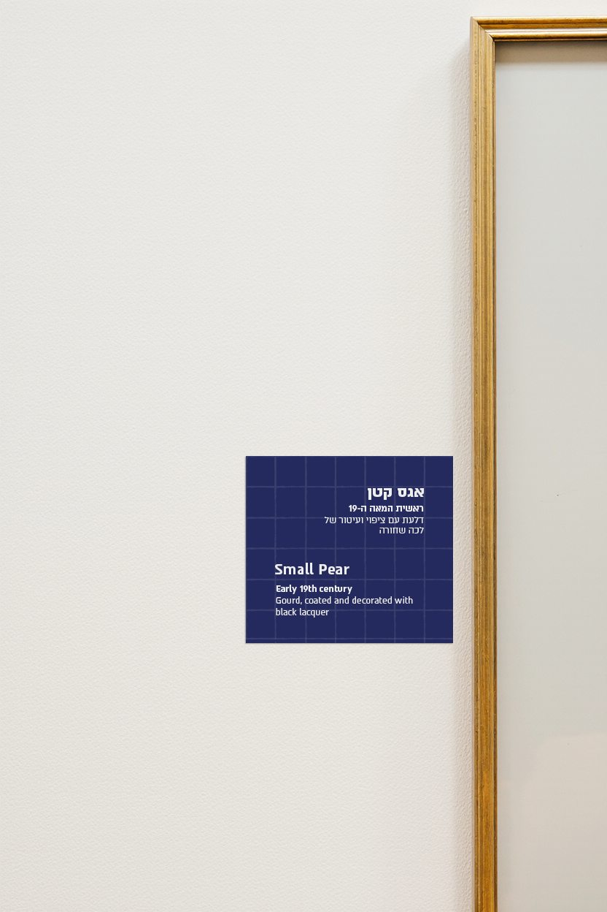
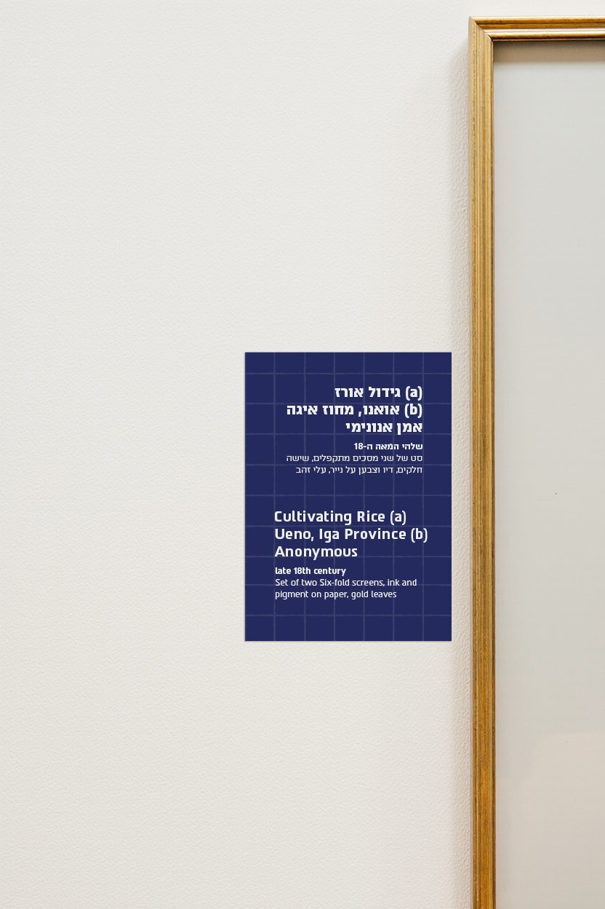
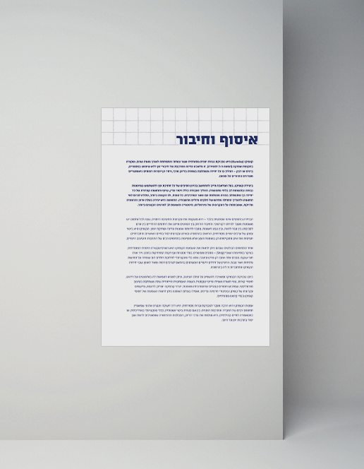
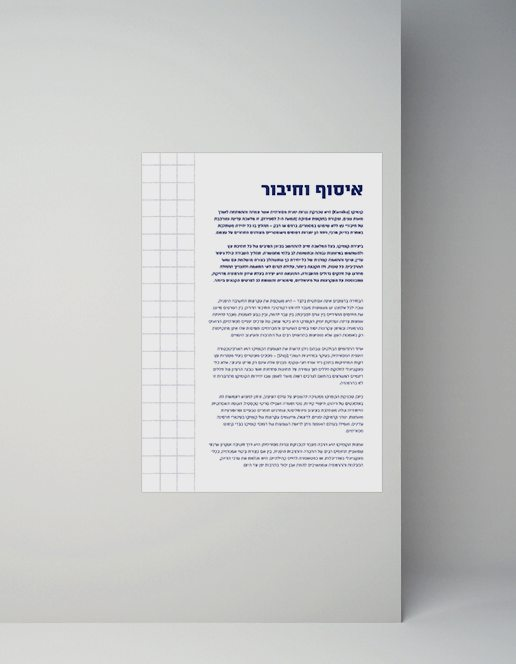
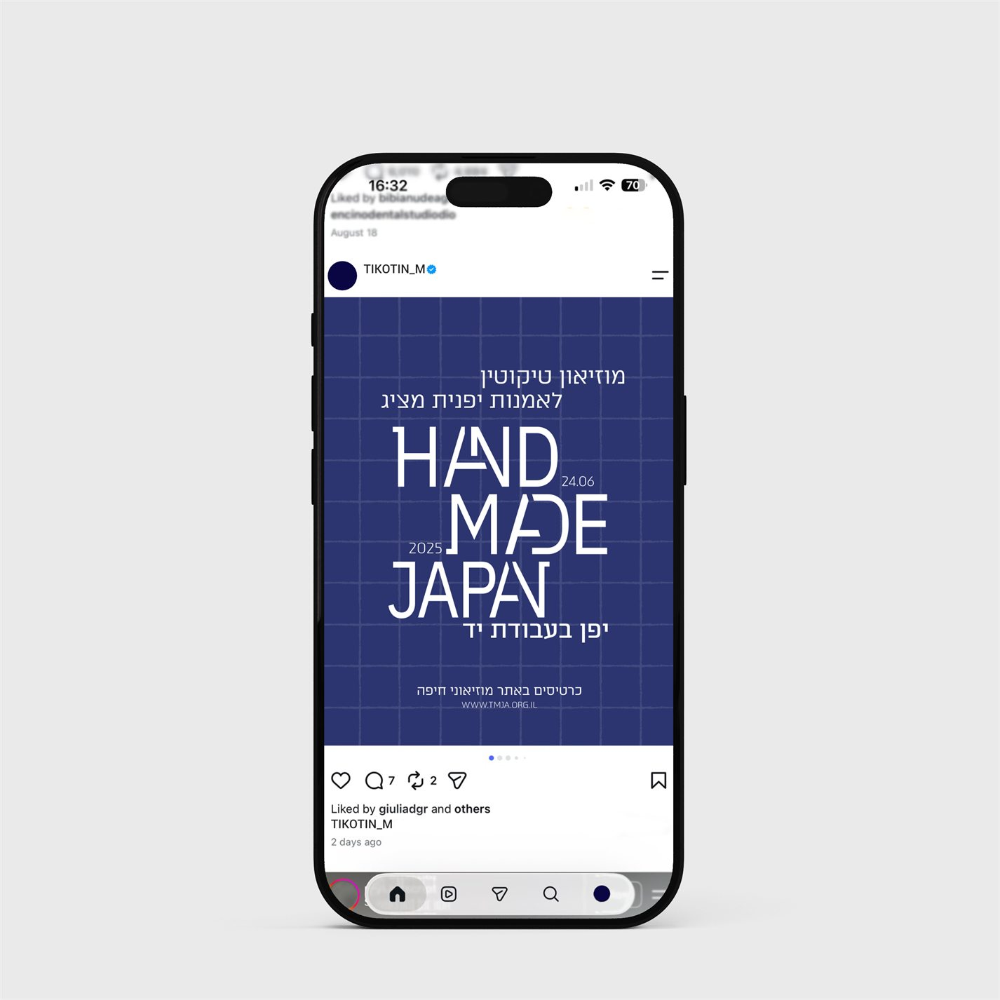

Hand Made Japan | Tikotin Museum of Japanese Art
Visual design concept for the ‘Hand Made Japan’ exhibition
Project Overview
This project was inspired by the quiet elegance of shoji traditional Japanese sliding panels - whose modular structure, natural materials, and delicate transparency represent minimalism. I combined this with the deep cultural legacy of Japanese indigo dye, a symbol of working-class resilience and quiet refinement during the Edo period. These elements together informed the visual identity: a refined balance between craft, tradition, and understated beauty.
- Timeline
- November 2024 - February 2025
- Project Type
- Academic, Brand Design






